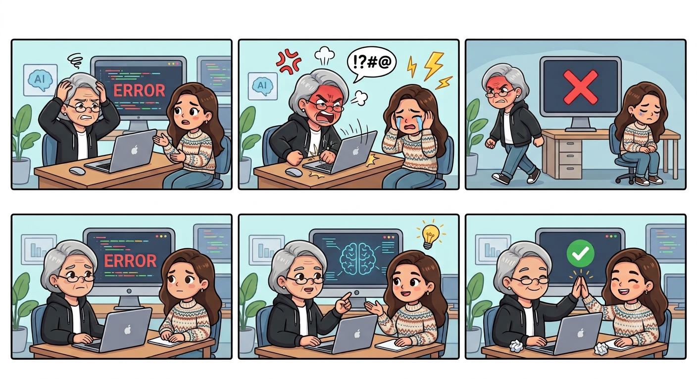
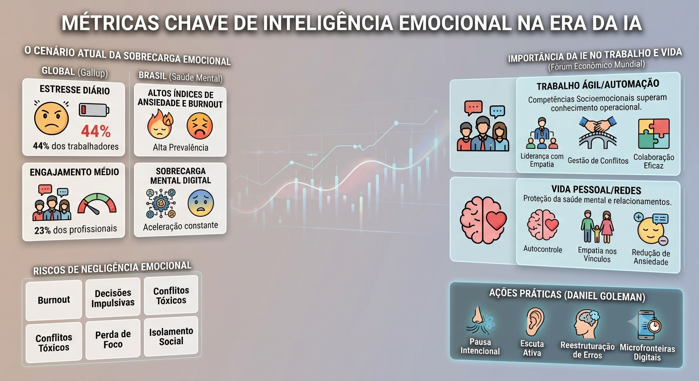

O diferencial humano em uma era dominada por algoritmos, automação e inteligência artificial.
Certo dia, estava eu no meio de um importante trabalho da faculdade, um colega havia mandado no grupo: "Gente, vocês viram essa nova IA? Ela faz o trabalho inteiro em 5 segundos, edita vídeo e ainda cria códigos perfeitos. A gente tá estudando pra quê mesmo?".
Naquela ocasião, bateu aquele frio na barriga, a mão suou e veio o clássico surto interno: "E agora? As máquinas vão fazer tudo e eu não vou servir pra nada?". No desespero, a primeira vontade de quase todo mundo é fechar o computador, entrar em pânico ou passar horas rolando o feed fingindo que o problema não existe. Esse medo de ficar para trás quando tudo muda rápido demais acontece com qualquer jovem hoje em dia.
Mas a boa notícia é que existe um superpoder que nenhum robô consegue copiar: a capacidade de entender e controlar o que você sente antes de tomar uma atitude. É isso que chamamos de inteligência emocional.

Os 5 pilares da inteligência emocional
Mudando um pouco o cenário, imagine que a sua mente é como o menu de opções de um jogo. Quando seu personagem toma um dano surpresa ou o jogo trava, jogar o controle na parede não faz você vencer. Ter inteligência emocional é saber a hora de soltar o botão, respirar fundo e pensar na melhor estratégia.

1. Autoconhecimento
Saber dar nome exato ao que você sente ("estou com raiva" ou "estou apenas com medo de errar?").
2. Autocontrole
Não explodir nem enviar mensagens impulsivas ou desmedidas em momentos de tensão.
3. Motivação
Capacidade de persistir e continuar tentando resolver o problema, mesmo após falhas consecutivas.
4. Empatia
Conseguir se colocar no lugar do colega, compreendendo as dores e a perspectiva do outro.
5. Habilidades sociais
Construir conversas saudáveis, dialogar sob pressão e solucionar atritos sem conflitos destrutivos.
O cenário atual: sobrecarga e o mercado
Pesquisas mostram que o estresse e a ansiedade estão batendo recordes. Dados globais do relatório State of the Global Workplace, da Gallup, revelam que cerca de 44% das pessoas sentem muito estresse todos os dias na rotina de trabalho e estudos.
No Brasil, os levantamentos de saúde mental indicam que os jovens estão entre os mais ansiosos do mundo, com quase metade relatando sobrecarga mental por causa da pressão da internet, da comparação contínua e do medo do futuro profissional.
Conclusão
A inteligência artificial continuará evoluindo e transformando a forma como construímos códigos, estudamos e produzimos. No entanto, o controle sobre a forma como você reage, sente e se relaciona sempre será exclusivo seu. Em um mundo repleto de algoritmos acelerados, cultivar a inteligência emocional é o alicerce fundamental para manter o foco, o protagonismo e o equilíbrio.
Gostou do conteúdo ou quer trocar uma ideia sobre tecnologia?
Conectar no LinkedIn